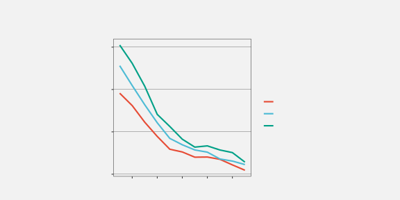
13 Text
TODO Add note in text and design that we have moved beyond what is normally considered data values and data symbols for encoding Eg encoding structure Eg text and guides But nothing needs to change! In terms of decoding Still just visual features and visual shakes and visual objects and congruence and learned encodings etc
TODO Need to add a Decoding Text section. Decoding text is just reading! Decoding text is definitely a learned encoding. Need to shift evaluation of text decoding out of Section 13.1? Can it wait until just before Dangers of Text? Once we have covered labels as well?
TODO Useful font selection tool? https://pimpmytype.com/font-matrix/
Figure 13.1 is a version of Figure 1.1 with all of the text removed. Although we can see that some values, or rather three sets of values, haved decreased, we cannot tell what the values are or by how much they have decreased. If there was ever any doubt, Figure 13.1 makes it clear that text is doing a lot of important work in a data visualisation.
TODO refer back to Section 2.6 (in encoding information?);
it helps to direct attention to what you want the viewer to see!
TODO Refer back to Section 4.1. Text is one way to decode to absolute data values (rather than just relative)
Eye-tracking studies also show that people spend a lot of time looking at the text within a data visualisation. For example, in Figure 13.2, there are more fixations in the regions that contain text than anywhere else. There is also evidence that text elements are more memorable than the other elements of a data visualisation.1
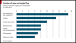

This chapter looks at the role that text plays in making data visualisations work.2
13.1 Visual features of text
TODO Refer back to Section 10.4 and Section 12.3
Figure 13.3 is a version of Figure 3.2 with white text added to each bar showing the exact number of offenders in each ethnic group. This is an example of using text as a data symbol.
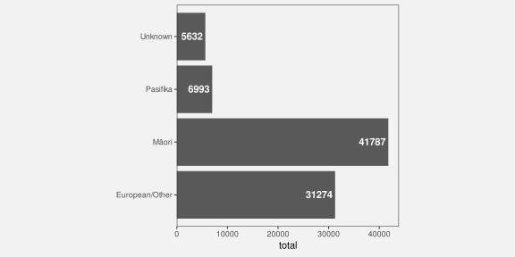
Just as data values are encoded to the visual features of the bar data symbols in Figure 13.3, data values are also encoded to the visual features of the text data symbols. For example, the ethnic groups are encoded as the vertical position of the bars and as the vertical position of the text. The data values for the number of offenders in each ethnic group are encoded as the length of the bars and as the horizontal position of the text. Furthermore, the data values for the number of offenders in each ethnic group are encoded as the pattern of the text—the letters and digits that make up the text.
Just as we can decode data values from the visual features of the bars in Figure 13.3, we can decode data values from the visual features of the text. For example, we can see just from the horizontal position of the text, without reading the text values, that some counts are (much) larger than others.
Encoding data values as the position, colour, and size of text data symbols is effective for the same reasons that these visual features are effective for other types of data symbols.
We see examples of the use of simple visual features in text in almost any piece of writing. For example, section headings are typically larger and bolder than the main text in a report and the Executive Summary in this book makes use of colour and angle to create visual connections between associated terms within a bullet-point list.
However, the unique power of text comes from decoding the pattern of the text. Text is the ultimate example of a learned encoding (Section 12.1). We all learn to read text (and numbers), which means that, when we are presented with a text pattern, there is a pre-existing decoding to the semantic content of the text (Figure 12.4). For example, in Figure 13.3, we are able to decode the data value 41787 (the count for Māori) from the text “41787”. Furthermore, this decoding is extremely accurate and very flexible.
Figure 13.4 shows another example of text data symbols
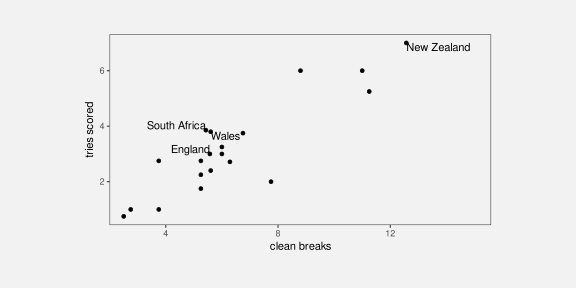
In terms of the criteria that we discussed in Chapter 3, the value of text data symbols is that they allow us to decode data values very accurately (Figure 1.4). Text is also very flexible because it is appropriate for both quantitative and qualitative data values. Finally, text has a very large capacity; we are able to distinguish between many different words and numbers.
Text data symbols are effective because they can be used to represent any sort of data and they allow a very accurate decoding of data values.
Compared to the bar data symbols in Figure 13.3, the text data symbols are much more complex shapes. In terms of the simple visual processing model from Section 2.2, the text data symbols are similar to visual objects. This means that text can convey more sophisticated information, at the expense of more cognitive effort, and with a limit on how many shapes we can process simultaneously (see Figure 2.3).3
One weakness of text data symbols is that comparing values (rather than just decoding a single value) requires more cognitive effort compared to comparing simple visual features (like the lengths of bars). For example, in Figure 3.2, it is quick and easy to approximate the ratio of Pasifika to Māori or European/Other to Māori from the lengths of the bars, but those comparisons are slower and take more conscious effort using the text data symbols in Figure 13.3.
It is harder to compare data values that are encoded to text because it requires more effort to decode data values and to perform mental calculations.
In addition, our visual system cannot generate visual summaries of large amounts of text (Section 8.2). This is why a table of numbers, like Table 1.1, is ineffective for perceiving groups of values or trends in values.
Large numbers of text data symbols are not effective because the visual system cannot decode visual summaries from the text.
Why is a picture is worth a thousand words? Because 1000 words is 1000 fixations, identifying 1000 visual objects, and then interpreting their combined meaning.
13.2 Learned encodings of text
Link to Section 12.1. Discuss how having learned to read allows us to decode information from text, when the text forms known words and expressions.
13.3 Encoding encodings
TODO Footnote “guides” terminology (vs axes, legends, etc)
TODO refer back to Section 4.1. We NEED the axes to decode absolute values. ALSO, we can decode ABSOLUTE values from the text labels. The decoding of text is NOT relative.
Figure 13.5 is a version of Figure 1.1 with the guides highlighted in purple. There are tick marks and tick labels on the x-axis and y-axis, there are horizontal grid lines, and there are legend elements to show the encoding from the different ages to different colours.
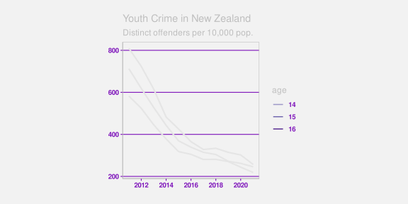
The first thing to note about the guides in Figure 13.5 is that they are all composed of data symbols, with data values encoded to visual features of the data symbols (Chapter 3). This is perhaps easiest to see with the grid lines. Each grid line is a data symbol where a data value, a rate of offending, has been encoded as the vertical position of the line. Similarly, each tick mark on the y-axis is a line data symbol where a rate of offending has been encoded as the vertical position of the line and each tick mark on the x-axis is a line data symbol where a year has been encoded as the horizontal position of the line. Finally, each of the tick labels on the y-axis is a text data symbol where a rate of offending has been encoded as the vertical position of the text and as the shape of the text. Similar encodings apply to the x-axis tick labels. The legend is also made up of line data symbols and text data symbols, this time with age data values encoded as the colour of lines and the shape of text.
The decoding of the shape of the text data symbols within the guides shows the critical role that text plays within guides. If we look again at Figure 13.1, there are coloured lines on the plot and there are coloured lines on the legend. The fact that these lines have different colours indicates that there are three different groups, but the colours alone do not tell us what the groups are. We can decode different values from the colours of the lines, but we cannot decode exact data values. In the original Figure 1.1, the shapes of the text labels on the legend allow us to decode the original data values—the three ages 14, 15, and 16.
TODO text is typically the only data symbol within a data visualisation that can be decoded to an individual, absolute data value.
Most other decoding is relative (e.g., Section 4.1, Section 5.4, Section 6.3) or to a data summary (e.g., Section 10.1)
The proximity of the text labels in the legend to the coloured lines in the legend means that we associate each label with each coloured line (Section 2.7). So the text labels in the legend are the essential data symbols in Figure 1.1 because only they allow us to decode from the colours of the lines to the three age groups.
The text labels on axes perform a similar service. For example, the numbers on the axes in Figure 1.1 are the only data symbols that provide exact decoding from positions to data values (years or rates). The lines within the plot, by themselves, only show that values are decreasing. It is only the relative position of the lines within the plot to the tick labels on the axes (and the grid lines) that allows us to decode from the lines within the plot to (approximate) data values.
Text data symbols within guides are effective because guides contain only a few data values that need to be decoded precisely. This is the situation where text excels.
Guides are effective because they encode known data values as text data symbols as well as the data symbols used in the main plot.
13.4 Case studies
Revisit lots of plots and add interesting guides
Do variation of pcp with mini plots of corr 1 0 and -1 ?
13.5 Encoding information
TODO Refer back to Figure 4.9 from text. The labels are the confusing part on the log plot
TODO Refer back to Figure 12.17 Visual objects can encode/decode metadata just like labels
Figure 13.6 shows a version of Figure 1.1 with the labels highlighted in purple. In this data visualisation, the only labels are the overall plot title and the legend title. It is also common to see axis titles.
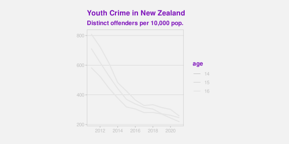
The difference between labels and the other components of a data visualisation, the data symbols and the guides, is that labels relate to metadata rather than raw data values. We can still consider this a encoding, just one that involves encoding metadata rather than data values (Figure 13.7).
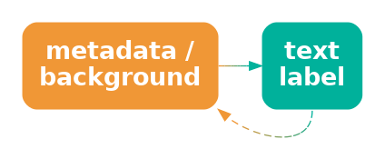
Labels contain information like descriptions of variables and units of measurement and references to data sources. These are all important pieces of information, but they are more complex, more abstract, and far fewer in number than data values. Fortunately, text is very capable of expressing complex information and works very well in small amounts, so it is ideal for this role.
To emphasise that point, imagine how impossible it would be to encode the information in the title of Figure 13.6, or just the legend title, only using simple geometric data symbols like bars and points. Using pictograms, which have learned decodings like text, would also be very difficult because it is much harder to compose pictograms in the way that text can be composed into phrases and sentences.
Text is the only way to encode the type of complex and abstract information that is required for titles and axis labels.
Another use of text in a data visualisation is to label specific points of interest. For example, Figure 13.8 shows a variation of Figure 9.4, with text added to help explain the result of the Rugby World Cup final to disillusioned New Zealanders. This demonstrates further the value of text as the only way to encode complex and nuanced information.4
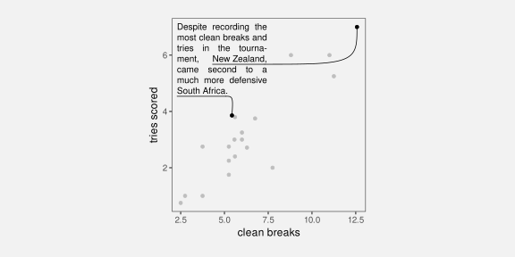
Figure 13.8 also demonstrates that text is an effective way of directing attention (Section 2.6).
Text labels can explicitly describe data values or, more usefully, data summaries that the data visualisation is designed to show.
REFER to Section 2.6.
13.6 Case study: Word clouds
Figure 13.9 shows a word cloud data visualisation based on the text of the Wikipedia page on the Rugby World Cup.5 This visualisation shows the frequency with which different words appear on the Wikipedia page. The data values that are being visualised are shown in Table 13.1.
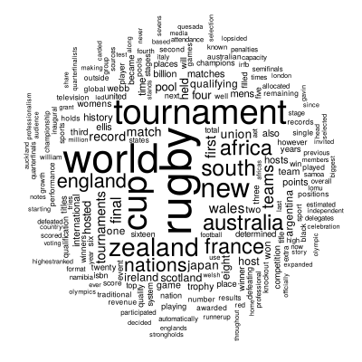
This data visualisation is unusual because it consists entirely of text data symbols. The encodings in Figure 13.9 include encoding each word as the pattern of a text data symbol and encoding frequency as the size of a text data symbol. There is no need for a guide for the encoding from words to text pattern because there is a learned decoding (Figure 12.4); we can decode each text data symbol into a word data value because that decoding has already been learned.
There is no guide for the encoding from word frequency to text size, so we cannot decode exact word frequencies. Table 13.1 shows the six most frequent words. However, the visualisation is still effective at conveying the relative frequencies. The larger words occurred more frequently. For example, we can see the names of the teams that were most successful at the tournament, like New Zealand and South Africa, are much larger than less successful teams.
| word | freq |
|---|---|
| rugby | 72 |
| world | 66 |
| tournament | 56 |
| cup | 54 |
| new | 41 |
| zealand | 38 |
The encoding of frequencies as the size of the words does not provide the best accuracy for decoding frequencies (Section 3.5) and this made worse by the fact that longer words become even larger. This means that we cannot identify the exact frequency of any one word, we cannot identify the quantitative difference in frequency between pairs of words, and we cannot easily perceive the distribution of frequencies across words. A word cloud is only effective for approximate ordinal comparisons of word frequencies (Chapter 3).
Frequency is also encoded to position in space, with more frequent words placed towards the centre of the word cloud. This is an example of redundant encoding; more frequent words are both larger and more central (Section 9.8).
A word cloud is effective for conveying words because it encodes words to text data symbols. It is also partially effective for conveying relative frequencies of words because it encodes word frequency to both size and position in space.
Another benefit of encoding frequency as position in space is the efficient use of space. For example, Figure 13.10 shows the same data presented as a bar plot with the frequency of each word encoded to a separate bar. Although the accuracy is improved for comparing frequencies, the bar plot does not have as much room for the words themselves.
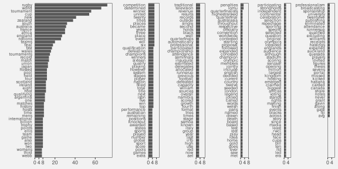
One weakness of the word cloud is that the angle of words changes with no corresponding change in the data values. This is an example of a dissonant encoding, which can cause confusion (Section 7.5). The viewer will notice the differences in angle and attempt to decode that difference to a difference in data values that does not exist.
The different angles of text in a word cloud is not effective because it does not encode any differences in the data.
13.7 Case study: Tables
Table 13.2 shows a subset of the 2023 Rugby World Cup data set (Table 9.1), just including the top eight nations in the tournament. We established in Section 13.1 that visualising data values in a table provides an excellent basis for accurately decoding individual data values, but imposes a larger cognitive burden for comparing values, and is a very poor for extracting visual summaries, such as trends.
For example, it is very difficult to determine from Table 13.2 whether there is any relationship between the values in the four numeric columns.
| country | sphere | runs | breaks | tries | points |
|---|---|---|---|---|---|
| South Africa | South | 95.14 | 5.429 | 3.857 | 29.71 |
| England | North | 100.3 | 5.571 | 3 | 31.57 |
| Fiji | South | 138 | 5.6 | 2.4 | 22.4 |
| Wales | North | 109.4 | 5.6 | 3.8 | 32 |
| Argentina | South | 131.3 | 6.286 | 2.714 | 26.43 |
| Ireland | North | 137.6 | 8.8 | 6 | 42.8 |
| France | North | 126 | 11 | 6 | 47.6 |
| New Zealand | South | 139.3 | 12.57 | 7 | 48 |
However, there are standard guidelines for formatting tables of values that can improve the readability of a table.6 Table 13.3 shows the same data as Table 13.2, but with all of the numeric columns right-aligned, a consistent number of decimal places in each column, fewer decimal places than the data actually possess, and the rows have been ordered from the highest number of points per game to the lowest.
It is easier to see some structure in Table 13.2. For example, the number of tries appears to decrease as well as the number of points. We can also see some evidence of the number of breaks decreasing as well, though it is weaker.
There are some familiar explanations for the improvement in the table display. The reduction in detail, with fewer decimal places, means that there is less complexity in the visual field. The consistent number of decimal places means that less is changing, so differences are easier to detect (Section 2.5). Also, the consistent baseline provided by right-alignment means that the text length of the numbers (the number of digits in each number) provides a crude encoding of the size of the number, particularly in the column showing the number of clean breaks. However, it is worth noting that some of the accuracy of the text has been sacrificed in order to make some of these gains.
| country | sphere | runs | breaks | tries | points |
|---|---|---|---|---|---|
| New Zealand | South | 139 | 12.6 | 7.0 | 48.0 |
| France | North | 126 | 11.0 | 6.0 | 47.6 |
| Ireland | North | 138 | 8.8 | 6.0 | 42.8 |
| Wales | North | 109 | 5.6 | 3.8 | 32.0 |
| England | North | 100 | 5.6 | 3.0 | 31.6 |
| South Africa | South | 95 | 5.4 | 3.9 | 29.7 |
| Argentina | South | 131 | 6.3 | 2.7 | 26.4 |
| Fiji | South | 138 | 5.6 | 2.4 | 22.4 |
For comparison, Figure 13.11 shows a scatter plot of the data from Table 13.2. The data symbol is a circle, with the number of tries encoded to horizontal position, the number of points encoded to vertical position, the number of clean breaks encoded to size, and the number of runs encoded to colour (shade). The relationships between tries and points and between breaks and both tries and points are still easier to perceive in this plot than in Table 13.3, but Table 13.3, even with its rounding, still provides better accuracy, particularly for breaks and runs.
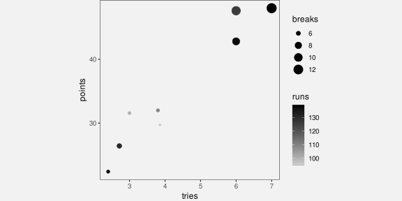
13.8 Case study: Stem-and-leaf plots
Figure Figure 13.12 shows a histogram of the number of tries scored by teams in the 2023 Rugby World Cup. The data symbols in Figure 13.12 are bars. The raw data values are the average number of tries per game for each team, but the lengths of the bars encode data summaries: the number of teams with an average number of tries within each range: 0 to 1, 1 to 2, and so on.
Because the borders of the bars are not drawn, we get an emergent shape from the combined bars (similar to a density plot; Section 10.3).
This histogram allows us to see features of the data summaries, such as a suggestion that there is a small subset of teams that score a higher number of tries than the other teams (a bimodal distribution; though in this case we have a very small amount of data). However, there is no way to decode the raw data values from this histogram.
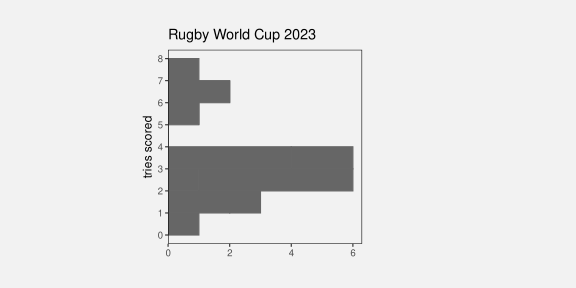
Figure Figure 13.13 shows a stem-and-leaf diagram of the same data (with tries scored rounded to one decimal place). The data symbol in this case is a text digit. Every team is encoded as a digit from 0 to 9, which represents the first decimal place for the average number of tries scored by each team. For example, New Zealand scored 7.0 tries per game on average and that is encoded as a 0 beside the 7 on the y-axis. The number of tries is also encoded as a combination of vertical position (the whole number of tries) and horizontal position (teams with the same whole number of tries are stacked horizontally, but also ordered by the first decimal place value).
The number of teams within each range (0 to 1, 1 to 2, etc) is encoded by the number of digits. Another way to look at it is that the data symbol is a piece of text consisting of several digits and the number of teams is encoded as the length of the piece of text.
As with the histogram in Figure 13.12, there are emergent shapes with two distinct humps visible, one taller than the other. However, in Figure 13.13 we are able to decode the raw data values as well. Furthermore, because the data symbols are text digits, we are able to decode individual data values very accurately.
In summary, Figure 13.13 combines standard decodings (length) with learned decodings (text pattern) to provide access to both high-level features of data summaries and raw data values.
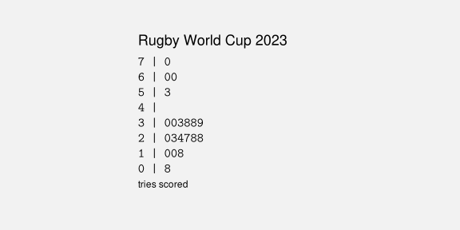
Figure 13.14 shows a variation on Figure 13.13 with the hemisphere encoded as the colours of the digits. This provides another demonstration that we can use simple visual features like colour to encode data values with text data symbols.
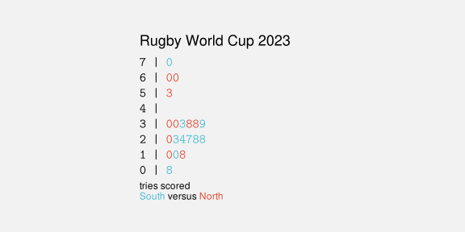
Figure 13.15 shows another variation on Figure 13.13, this time with the hemisphere encoded as the weight of the digits. This demonstrates the idea that there are text-specific visual features that can be used to encode data values. Other examples are font family (e.g., Arial versus Roman) and font slant (italic versus upright).7

Stem-and-leaf plots might be seen as an archaic form of data visualisation, but we can see that they are effective in many ways.8
Unfortunately, despite all of their advantages, stem-and-leaf plots have a limited usefulness because they can only accommodate very small data sets. There is a similarity between a stem-and-leaf plot and the stacked icon plot in Figure 12.21 (a). However, whereas an icon can easily be used to represent some multiple of objects, that option is not available for text digits.
13.9 Case study: Direct Labelling
some sort of ggrepel version of the flags example in visual-objects?
relate visual objects (other than text) to direct labelling?
“Review of Graph Comprehension Research: Implications for Instruction” Shah and Hoeffner (2002) [p 56] Some quotes from discussion of usefulness of colour, but in relation to the use of legends: “reduce the difficulty viewers face in keeping track of graphic referents because of the demands imposed on working memory” [p 57] Cites Kosslyn (1994) for “label graph features directly with their referents”
“A Model of the Perceptual and Conceptual Processes in Graph Comprehension” Carpenter and Shah (1998) Eye tracking study “viewers must continuously reexamine the labels to refresh their memory”
13.10 Dangers of text
Figure 13.16 shows a data visualisation of the number of gun deaths in Florida between 1990 and 2012, covering the enactment of Florida’s “stand your ground” law that loosened the constrainst on an individual’s rights to use deadly force.9 The title of the plot points out that gun deaths decreased after the law was enacted, which is perhaps surprising given that use of deadly force was less constrained after the introduction of the law.

However, if we look closely at the plot itself, we can see that the y-axis scale is inverted. A downward trend is actually an increase in gun deaths, so the data shows that gun deaths actually increased after the law was enacted.
This example demonstrates that the text within a data visualisation is not only given a lot of attention, but it can have a dominant effect on the message that the viewer takes away.10
Figure 13.16 is an example of a deliberately misleading data visualisation, which we obviously want to avoid. However, the broader point is that we need to be at least as careful with our choice of text content as we are with our selection of encodings from data values to visual features and we have a responsibility to work hard to make sure that the message from data symbols and from text labels is completely consistent.
13.11 Alt text
Is a data visualisation effective if we cannot see it? We saw in Section 6.7 that a data visualisation may not be effective if a colour encoding does not take into account red-green colour blindness. But what about a low-vision or blind audience?
Although data visualisation is based on the visual system, it is still possible to make a data visualisation effective for a low-vision or blind audience by providing a text description of the data visualisation. Alt text is a text description of a data visualisation that will be recognised and read out by a screen reader.
The alt text for a data visualisation will ideally describe what variables are being displayed and how they are encoded (what sort of plot is it), data summaries like trends, clusters, outliers, and correlations, and include the main message of the visualisation, including causal explanations and wider implications.11
Another option sometimes employed is to provide tables of data in addition to the data visualisation, though this will not always be possible or practical.
All of the images in this document have alt text (or at least they should!).
13.12 Summary
Data values can be encoded as the visual features of text, such as position and colour, just like for other data symbols.
The pattern of text—the characters used in text—is particularly important because we have a learned decoding of text. We can read data values from text.
We can use text to encode any type of data, we can represent a very large number of different categories, and we can decode individual data values from text extremely accurately.
On the other hand, decoding a large number of data values from text is very slow and we cannot generate visual summaries from text.
Guides are really just collections of data symbols, with specific data values encoded as the visual features to demonstrate how data values have been encoded.
The text elements within guides are essential because they provide the only precise decoding of exact data values. This is what allows the decoding of the main data symbols within a data visualisation.
Overall, text is very valuable in a data visualisation for accurately encoding a small number of data values, or to express complex information. But text is not appropriate for representing a large number of raw data values.12
Brath, Richard, and Ebad Banissi. 2014. “The Design Space of Typeface.” In 18th International Conference on Information Visualisation (IV), 41–50. Paris, France: IEEE. https://doi.org/10.1109/IV.2014.17.
Schwabish, Jonathan A. 2020. “Ten Guidelines for Better Tables.” Journal of Benefit-Cost Analysis 11 (2): 151–78.
Wainer, Howard. 1992. “UNDERSTANDING GRAPHS AND TABLES.” ETS Research Report Series 1992 (1): 4–20. https://doi.org/https://doi.org/10.1002/j.2333-8504.1992.tb01443.x.
Wikipedia. 2024. “Rugby World Cup: Wikipedia, the Free Encyclopedia.” http://en.wikipedia.org/w/index.php?title=Rugby%20World%20Cup.
“a memorable visualization is often also an effective one.” (“Beyond Memorability: Visualization Recognition and Recall” Borkin et al (2016)) Only a thumbnail version of the original image is shown in Figure 13.2 in order to comply with terms of use of the MASSVIS data set.↩︎
Provide citation to Brath book at least. Perhaps cite my text article, however that gets to see the light of day.↩︎
Talk about there being separate verbal processing areas in the brain. Text has to come in as visual, so undergoes visual processing, but text is also processed separately for its language value. Cite Ware p315-316↩︎
Russell Ackoff’s “From Data to Wisdom” Text is very flexible - it can convey data, information, knowledge, understanding, and wisdom. Most other graphical elements are much more limited.↩︎
For example, Schwabish (2020).
Ehrenberg (1977) advice on tables
“UNDERSTANDING GRAPHS AND TABLES” Wainer (1992) (Wainer 1992)↩︎
(Brath and Banissi 2014) at least↩︎
Quote from John Tukey about stem-and-leaf plots:
If we are going to make a mark, it may as well be a meaningful one. The simplest - and most useful - meaningful mark is a digit.
Attributed to “Some Graphic and Semigraphic Displays” in T. A. Bancroft, ed. Statistical Papers in Honor of George W. Snedecor (Ames, Iowa, 1972), p. 296.↩︎
Based on a Business Insider data visualisation; data from USA Facts.↩︎
“Trust and Recall of Information across Varying Degrees of Title-Visualization Misalignment” Kong et al (2019) Greater impact that can even override message in data. “Towards Understanding How Readers Integrate Charts and Captions: A Case Study with Line Charts” Kim et al (2021) Studied what happens when caption and text are incoherent; viewer goes with the prominent visual feature. Main message is to make the text and chart coherent.↩︎
“Accessible Visualization via Natural Language Descriptions: A Four-Level Model of Semantic Content” Lundgard and Satyanarayan (2022)↩︎
Acknowledge Ware 4th Ed: G8.18 (p327) “When a large number of data points must be represented in a visualization, use sybmols instead of words or pictorial icons.” G8.19 (p327) “Use words directly on the chart where the number of symbolic objects in each category is relatively few and where space is available.”↩︎